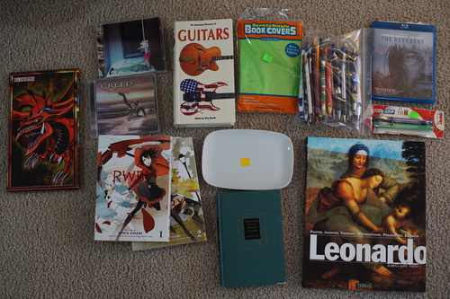
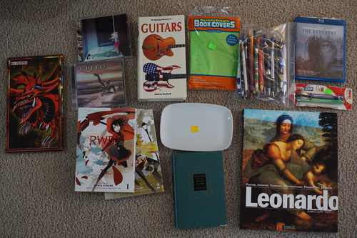
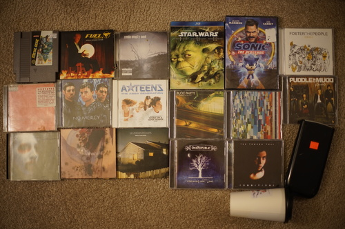
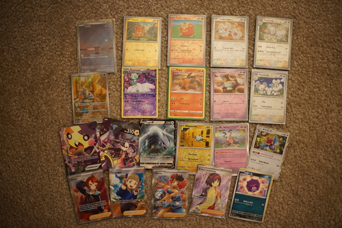

The other day I tried connecting my joycon to use my cintiq and found qjoypad could simply not see the dang thing. It was definitely connected, but was not showing up in /dev/input/. After a few hours, I tried reinstalling bluez and finally it showed up back in /dev.
After this excursion into learning about inputs in linux, I thought I would be able to map the buttons using udev after reading this blog about footpedals for vim. I was able to get a couple buttons mapped this way, but I ran into the issue of mapping the analog stick. I wasn't able to find any examples of mapping analog sticks with hwdb, so I dumped this idea. Like QJoyPad, udev hwdb also isn't capable of mapping a button to 2 keys (i.e. ctrl z). I just mapped them to some function keys that don't appear on keyboards anymore and set the config to the function keys in Krita. At least no keyboard I've ever seen has had F13-24...
I've been playing with writing a program to map them for me without QJoyPad and with multi-key support. Of course my joycon battery eventually died, so I swapped it with the one on my switch and... I'm back at square one. Reconnecting a d*ng joycon wouldn't show up as an event! Logging out and back in did not change anything. It seems to work after a restart. Can I just get this to connect reliably, please?
Anyway, I've uploaded my QJoyPad button and Krita config to art -> tools, so please enjoy. I'll keep working on my program, but in the end it should be functionally equivalent to the current set up.
Actually maybe I should buy a foot pedal.
 

Ryan's
Either Ryan or I didn't have this. I think it was me.
I thought Ryan had this and I didn't but it was the opposite. I gave it to him.
Ryan's
Ryan's
hits: pentel P205, sakura nocks 0.5, koh-i-noor 5612 lead holder, staedler 2mm lead refills HB and F, a few berol prismacolors. Now I can use more than 2 lead grades!!! I was using just 2H in a lead holder for rough sketching and hb in a .5
cheaper than buying refills. I need a pink one!!
These were awful....
a small palette
What is this!? Who are they?!
Ryan's
Ryan's. Who nibbled on the cover?
Does my mother own enough of these?
Ryan's
Ryan's. I don't like Gwen Stefani in any form other than perfume.
I would never buy Japanese CDs simply because they are Japanese. Right???
Today I went a lil nutz. Got a few CDs I really wanted, a few with songs I remember from high school, and a couple I just wanted to take a chance on.
Ryan says Metal Gear 2 was better.
I added this to my wishlist like 2 days ago
Ryan's. Do NOT email me to discuss Star Wars. I will block you.
I finally found it at the right price point! Ryan agreed to watch it with me.
I was worried if this one would play so the pawn shop owner gave it to me for free
just last night I was trying to remember what the name of this group was. It wasn't "mercy me", it wasn't "mercy"... Thank god I looked it up because I saw it today!!
This one is pretty fun
Oh no I can hear his British accent
Kintsugi wasn't bad but I also didn't find it notable.
Ryan's. It comes with a film? What kind of hecked up cr*p am I about to expose myself to?
It's too late to order fries.
Ryan bought it for his buddy who wants to do math
I was wheelin and dealin today wow!!!
I got so excited about finding Silversun Pickups that a man came up to see what I was so happy about and then continued to talk to Ryan about something I wasn't paying attention to. Carnavas is so good ;______; Was it my top no-previous-knowledge pick of 2023? I had no idea who they were when I picked it up and yet I keep clicking on Carnavas instead of listening to new albums.
There's a vintage/record store around with a good number of CDs that are almost all unmarked with the price. I asked and she gave me a vague answer of "under $5" and "we'll decide at the register". I looked around and brought up Fuel and Smile Empty Soul and she passed off pricing to a man. I only haggled him a dollar down, but I got them both for $5. It's the little things in life, right?
I usually don't take card photos, but here's what we found at the card shop! I cry everytime I see Maushold. They are so cute with their babies ;_______; I'm going to catch like 50000 Tandemaus in Violet!!!!

My biggest musical discovery lately was the split in Goo Goo Dolls tracks. I have a Boy Named Goo and Dizzy Up the Girl. Some songs are really good! Super good!! Some are completely different and not particularly enjoyable. The secret is there are 2 vocalists in this band. One is better at both writing songs and singing. These albums are in the transition of switching to Johnny Rzeznik as the main vocalist. You can basically ignore all the Robby Takac songs.